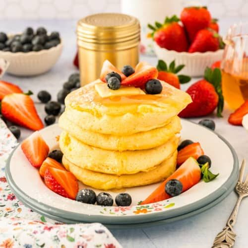
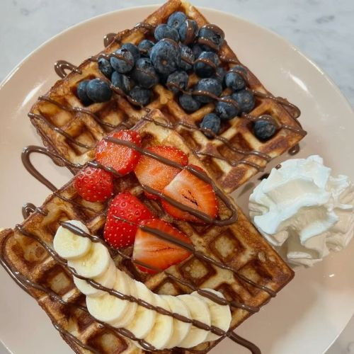
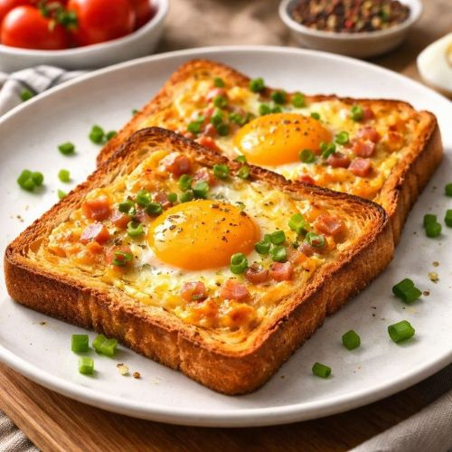
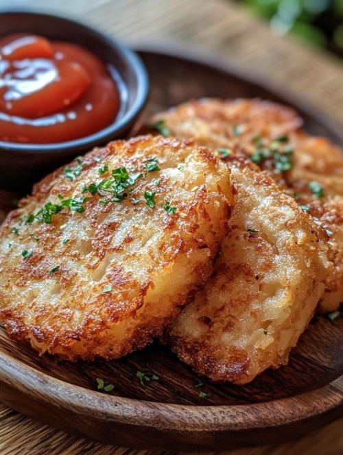

Your go-to destination for delicious recipes for Breakfast.

Start your day with these light and fluffy pancakes, perfect with syrup and fresh fruit.
View Recipe
Start your day with these delicious chocolate fruit waffles, perfect for a sweet start to your morning.
View Recipe
Start your day with this delicious cheesy egg toast, perfect for a hearty breakfast.
View Recipe
Start your day with these crispy and golden hash browns, perfect for a satisfying breakfast .
View Recipe